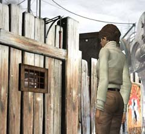
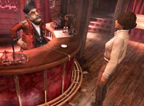

| 概要 | 地図 |
| 淡いヒント集 | ヒント集 | 的確なヒント集 |
| 攻略最短ルート |
| 場所選択に戻る |
ロマンスバーグ(前半)
 石炭を入れる装置へ行く 柱に取り付けてある「ガソリンタンク」を入手  兄弟の家へ行き、レバーを引く 「ガソリン」を1回選択する 町はずれまで移動し、”とても寒い”ことを確認  家の囲いに張ってあるポスターを調べる ポスターを破り、中へ入る  ユーキーが入っている木箱を調べ、かんぬきを外す 奥へ移動し、ガソリンタンクをクリック (ガソリンが手に入る) 家から出て、石炭を入れる機械の所へ移動 石炭を入れる機械に対し「ガソリンタンク」を使う 柱にある赤いボタンを押す (機械の煙突から煙が出る) 上へ移動し、石炭を入れる装置のレバーを引く (石炭が入る) オスカーと会話  酒場へ移動する ムービー 酒場へ移動し、サーコスと会話 (選択肢がなくなるまで) マルカと会話 (選択肢がなくなるまで) サーコスと会話 (「マルカ」、「白布」について聞く) マルカと会話 (「修道院」、「ヘルプ」を選択) 「コイン」を入手 エミリオフ大佐に話しかける (「ヘルプ」もしくは「ミッション」でハシゴをおろしてくれるはず) はしごを登り、店の二階へ移動 店の二階で「防寒具」を入手 機関車のバスルームへ移動し、着替える |
| 場所選択に戻る |
| 概要 | 地図 |
| 淡いヒント集 | ヒント集 | 的確なヒント集 |
| 攻略最短ルート |
Syberia II
| 目次へ戻る | ページの上部へ |